Support Information
ShoppingFoxList
Goal
The application allows users to easily organise their shopping lists. It supports light and dark mode depending on the settings of the phone.
Requirements to install
iPhone iOS 15.0
Functionality
Light and Dark Modes
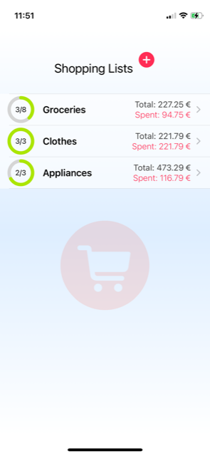
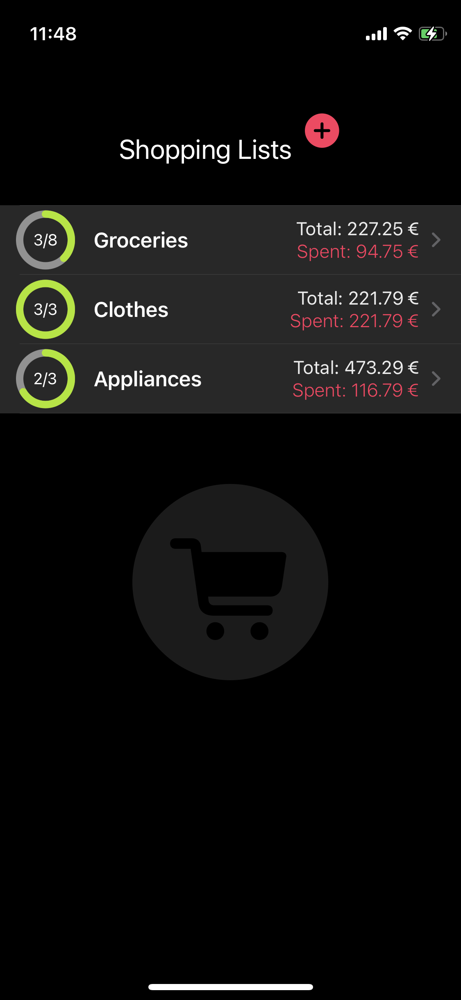
Creating, editing and deleting lists
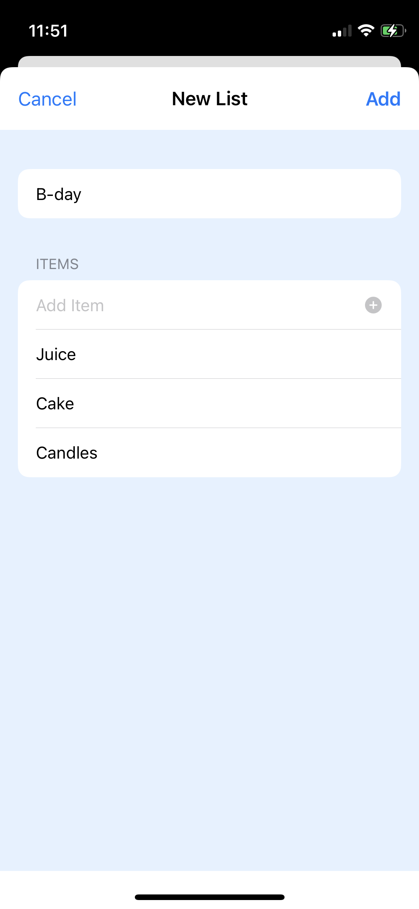
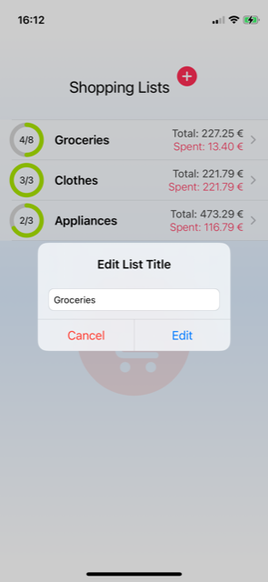
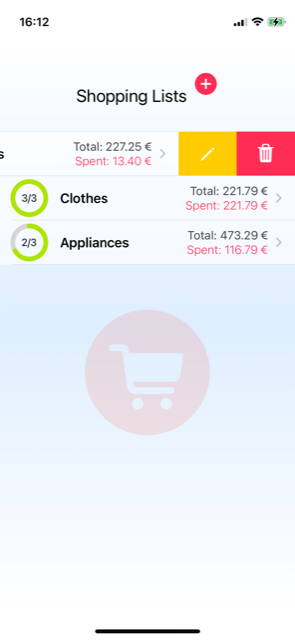
Creating and deleting items in each list
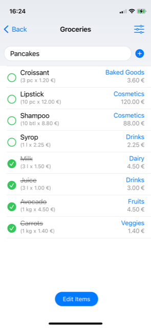
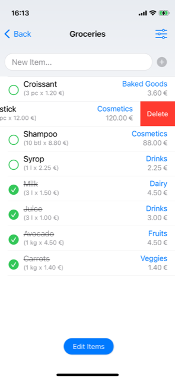
Editing items
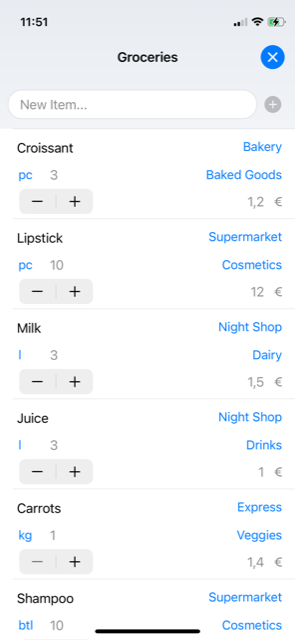
Filtering and displaying properties of each item
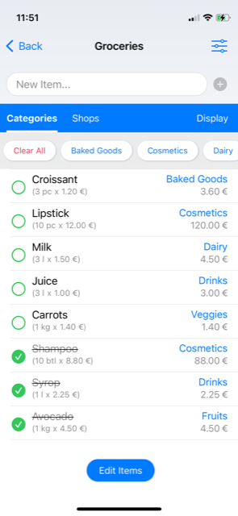
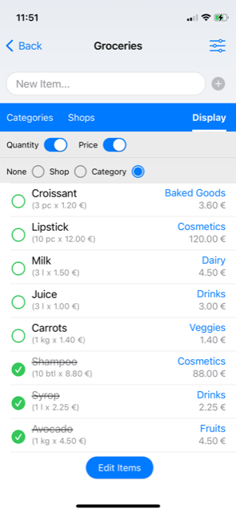
Additng and deleting values of item properties
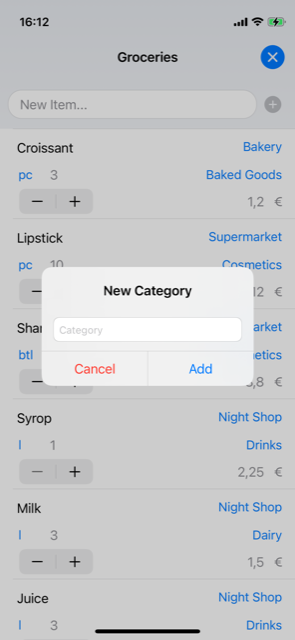
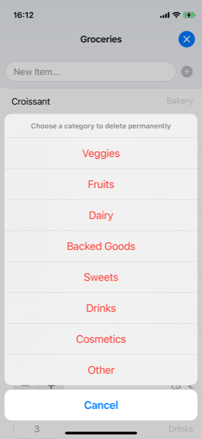
Changing the status of each item to be checked/unchecked
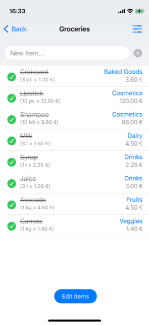
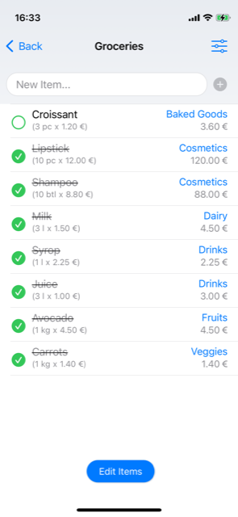
Codace
Goal
The application helps programmers to prepare for their JavaScript interviews.
Requirements to install
iPhone iOS 15.5
Functionality
Codace Initial Screen
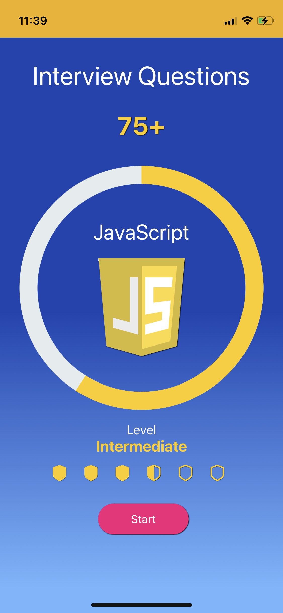
Showing all available categories
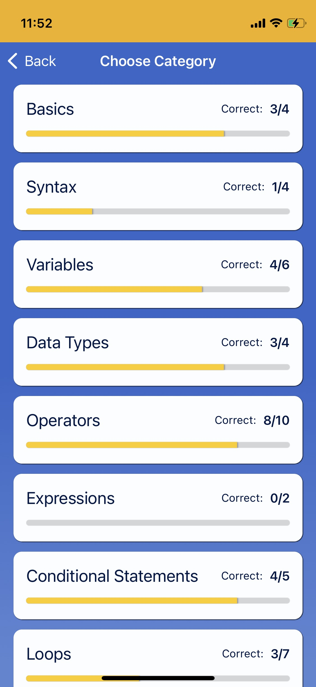
Showing subcategory with closed answers
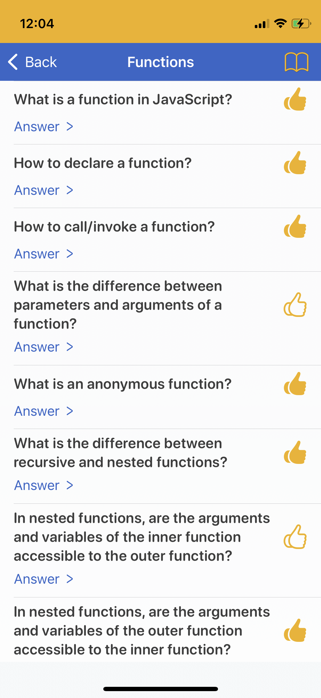
Showing subcategory with open answers
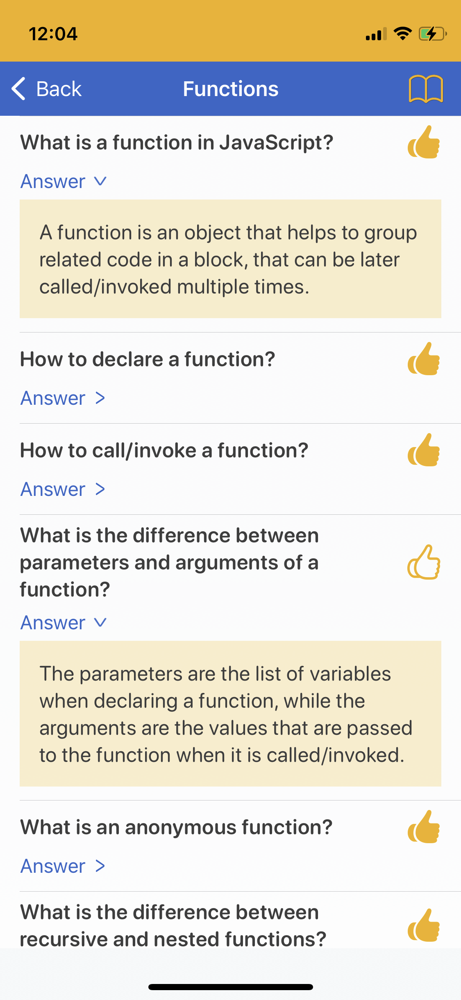
Showing only questions that are to revise
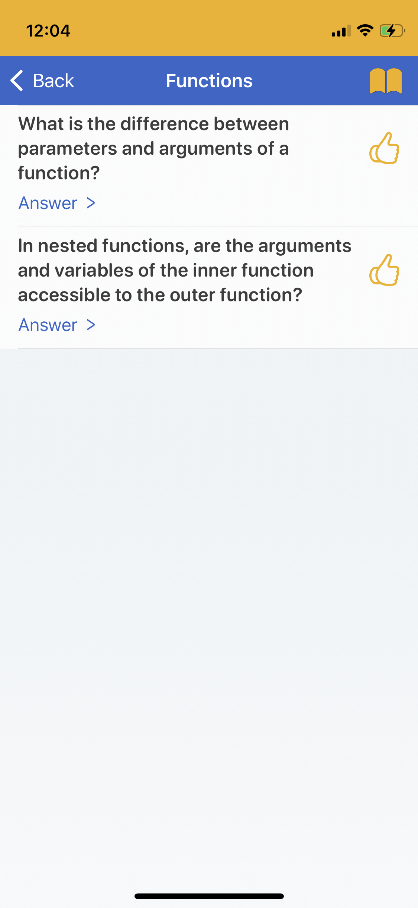
Contact
For any enquiries, please contact us at: oneworkingfox@gmail.com